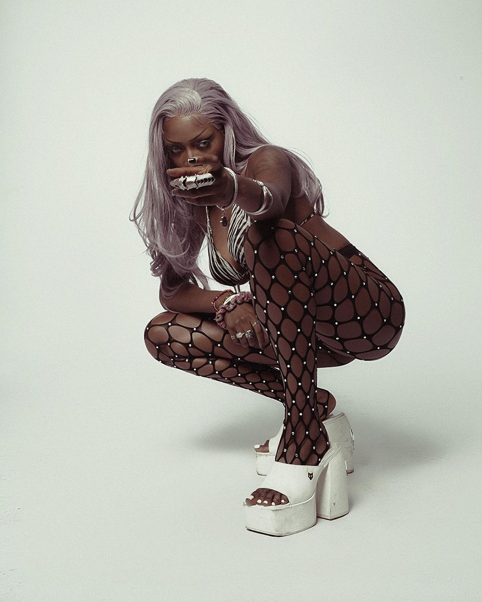

|
“Besides my aura & influence, of course, my biggest asset is my versatility Ashley Okoli is a 25 year old Stylist, Designer, Creative Director, and Social Media Influencer, with a knack for making bad b*tches looking even badder. Ashley enjoys being in front of the camera, either as herself or as one of her many alter egos. Through fashion – dressing up, and telling stories through the clothes she styles or the clothes she designs is her way of life, she is able to express herself. Which is how she steals freedom in a society that largely constricts it. Through being so liberated in herself, Ashley is able to inspire people to be free also, or act as a vessel for them to express their own freedom through her. |

|